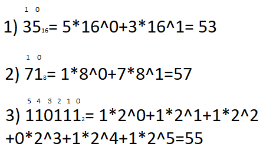
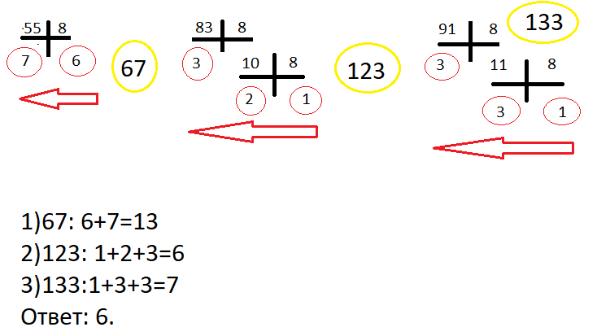

В десятом задание есть 2 типа примеров:
Среди приведённых ниже трёх чисел, записанных в различных системах счисления, найдите минимальное и запишите его в ответе в десятичной системе счисления.
В ответе запишите только число, основание системы счисления указывать не нужно.
6016, 1348, 11000012
На изображение показан первый случай.
Чтобы решать данный тип задачи, нужно хорошо уметь переводить числа из разных систем счисления в десятичную.

Вот так выглядит решение этой задачки, осталось выбрать минимальное число. Понятно что это 53.
А здесь уже второй тип десятого номера:
Среди приведённых ниже трёх чисел, записанных в десятичной системе счисления, найдите число, сумма цифр которого в восьмеричной записи наименьшая.
В ответе запишите сумму цифр в восьмеричной записи этого числа.
5510, 8310, 9110
Для решения необходимо знать как переводить числа из десятичной системы счисления в другие.

В данном задании необходимо записать в ответ наименьшую сумму цифр получившихся чисел.
Значит ответ 6.